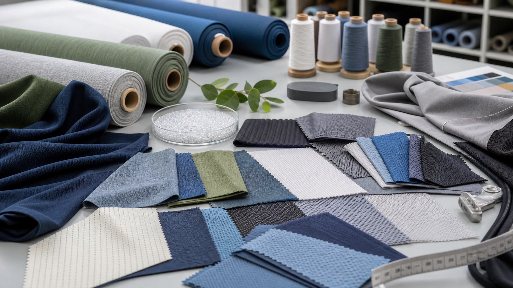

Stretch
Stretch describes extension under the selected force or extension condition. It must remain tied to direction, method, specimen dimensions, care state, and test settings.

Activewear material validation
Separate stretch from growth and recovery, preserve fabric direction and care state, and connect laboratory results to an actual garment wear test before approving bulk material.
Direct answer
An activewear fabric stretch and recovery test should begin with the garment decision: where the fabric must extend, how it is loaded, how long the load acts, how much growth can remain after release, and whether the result must still hold after agreed care. Record the exact fabric, lot, finish, color, direction, specimen history, method edition, method options, conditioning, cycles, readings, recovery interval, acceptance criteria, and released scope.
“Four-way stretch,” fiber composition, GSM, and a supplier's hand-stretch demonstration do not state the test method or prove that a waistband will stay up. Fabric evidence screens material behavior; pattern geometry, seam and elastic construction, size and body proportion, garment pressure, movement, and wear duration still require finished-garment validation.
Question discovery
Recent Reddit discussions use phrases such as a waistband rolling down, leggings needing constant adjustment, and compression feeling reduced after limited wear. Those posts identify buyer and wearer language only. They do not prove whether the cause is fabric growth, pattern balance, grading, sizing, seam construction, elastic behavior, care, or the wearer's activity and proportions.
Stretch describes extension under the selected force or extension condition. It must remain tied to direction, method, specimen dimensions, care state, and test settings.
Growth is the residual extension observed after the applied demand is removed under the selected method. A fabric can extend easily yet retain more growth than the product can tolerate.
Recovery describes return toward the original dimension after release. The reading time matters; an immediate result and a later result answer different questions.
A stable fabric result cannot by itself prove waistband hold, compression, ride-up, pressure comfort, or fit across sizes. Test the sewn garment on the intended activity and wearer scope.
Eight-step workflow
The record should allow a buyer, supplier, laboratory, and product developer to reproduce the decision without inventing missing conditions after a result arrives.
State the garment, zone, intended activity, size range, fit intent, expected movement, hold duration, care route, and decision to be made. Waistband power, knee bagging, seat recovery, and comfort stretch are not interchangeable questions.
Record supplier and material code, fiber composition, knit or woven construction, nominal weight and width, color, finish, lot, production stage, and approved physical reference. A new lot, finish, or construction needs an applicability decision.
Identify wale and course, warp and weft, or another defined orientation. Record cutting, conditioning, previous extension, washing, drying, heat, and storage because specimen preparation can change the result.
Choose the standard family, edition, specimen route, apparatus, load- or extension-controlled condition, cycles, hold, recovery interval, and calculation that fit the fabric and decision. Do not mix results from different methods as if they were one scale.
Set separate criteria for required extension, permitted growth, recovery timing, direction, initial and post-care state, sample coverage, repeat variation, and any product-specific limit. Name the decision owner and exception route.
If consumer care may change material behavior, use the agreed washing and drying procedure, cycles, detergent, machine type, drying route, conditioning, and retest timing. Do not label an uncontrolled household wash as a standardized result.
Use production-intent fabric, elastic, seams, pattern, and size. Measure relevant garment landmarks before and after the agreed movement sequence, wear duration, pocket load, and care; capture both observations and measurements.
Link pass, hold, correction, retest, exception, or rejection to the exact material, color, lot, finish, garment, size, care state, test report, sample, and approver. Reopen the decision when a controlled input changes.
Test architecture
One result should not be stretched beyond the specimen and condition it actually represents.
| Evidence layer | Control in the record | What it cannot prove alone |
|---|---|---|
| Fabric strip or loop | Material identity, direction, specimen dimensions, method and edition, force or extension condition, cycles, timing, conditioning, stretch, growth, and recovery readings. | Biaxial body movement, whole-garment fit, waistband roll, seam response, wearer comfort, or every care state. |
| Multiaxial fabric test | Material and lot, specimen geometry, method and edition, deformation route, loading pattern, conditioning, readings, criteria, and repeatability. | The exact pressure, fit, movement, or construction of a finished garment. |
| Narrow elastic or waistband component | Component code, dimensions, direction, attachment state, current narrow-fabric or product-specific method, cycles, growth, recovery, force behavior, and care state. | The behavior of the main body fabric or the assembled waistband on every wearer. |
| Finished garment wear trial | Style, revision, size, wearer scope, landmarks, activity sequence, duration, pocket load, observations, measurements, care state, and limitations. | Every wearer, size, activity, wash history, production lot, or an unrelated material substitution. |
Primary standards
The current ISO 20932-1:2018, confirmed in 2024 and amended in 2021, covers straight-strip or loop tests for fabric elasticity and related properties, excluding narrow fabrics. ISO 20932-2:2018 covers multiaxial tests, while ISO 20932-3:2018 covers narrow fabrics and has a 2025 amendment.
ASTM D2594/D2594M-21 covers stretch and growth of low-power knitted fabrics and explicitly notes that support or other applications may be better evaluated under other listed methods. ISO 6330:2021 specifies controlled domestic washing and drying procedures for textile testing and warns that machine, detergent, and dryer parameters can affect results.
These public pages define scope; they do not replace the licensed procedure. Confirm the current edition, permitted options, competent laboratory, sampling plan, units, calculations, acceptance criteria, and product-market requirements for the exact project. This article does not reproduce proprietary test instructions or supply a universal pass value.
Free test register
The downloadable CSV connects product zone and risk to fabric identity, lot, direction, care state, method and edition, controlled settings, stretch and growth results, recovery timing, prewritten criteria, garment wear observations, corrective action, retest, limitations, and released scope.
Sources and limits
An August 2026 weightlifting discussion describes leggings that fit the waist but restrict the lower body, or fit the lower body while the waistband becomes loose or rolls. A July 2026 leggings discussion asks why compression seems to decline and garments need repeated adjustment, while a September 2026 Lagree discussion repeats roll, fold, and ride-up language. Their anecdotes are not test evidence and do not establish a technical cause.
This article therefore keeps material testing, garment testing, and fit-range validation separate. It does not promise that a fiber percentage, stretch label, laboratory pass, or one wearer trial will eliminate rolling, bagging, pressure, ride-up, or adjustment for every product or body.
Intent boundary
FAQ
Not by itself. Fiber percentage does not identify yarn, construction, finish, heat history, fabric direction, lot, test method, force or extension, cycles, care state, or recovery interval. Compare production-intent materials with a controlled method and garment validation.
Not unless the claim is tied to defined directions, a named method, conditions, readings, criteria, specimen identity, and supported scope. Treat the phrase as an incomplete description until the evidence is recorded.
No. Stretch concerns extension under the selected condition. Growth concerns residual extension after release under the chosen procedure. Recovery concerns return toward the original dimension and depends on when it is measured.
If the product decision or claim must survive care, compare the agreed initial and post-care states using a controlled washing and drying procedure, cycles, conditioning, and retest timing. The appropriate protocol depends on the product and intended care.
No. Waistband behavior also depends on pattern, rise, grading, elastic and seam construction, garment dimensions, size selection, wearer proportions, movement, duration, pocket load, and care history. Use fabric evidence and a representative finished-garment wear test together.
Preparing an activewear material brief?
The current method, laboratory, specimen plan, settings, acceptance limits, cost, timing, market requirements, and release authority must be confirmed for the exact project.